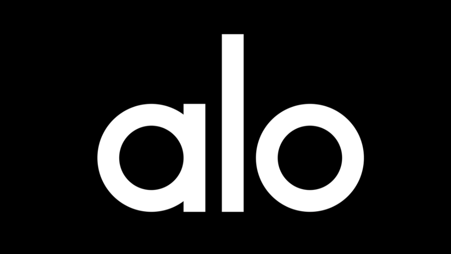
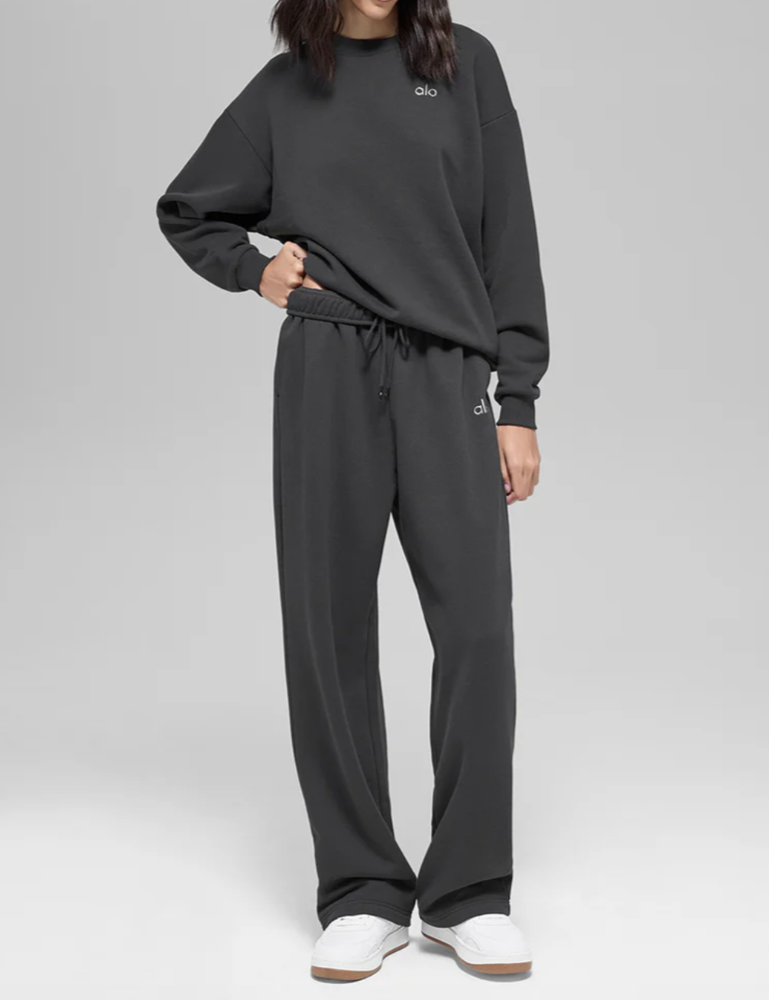

About Alo
Alo is a premium activewear brand focused on combining performance, comfort, and style. Their collections are designed for both workouts and everyday wear.
Featured Color

The Candy Heart Pink collection brings a soft, vibrant energy to activewear, offering a stylish and feminine look.
- Soft performance fabrics
- On-trend color palettes
- Everyday comfort + style

Signature Styles
Alo offers versatile styles like this Green Olive set, combining neutral tones with elevated athletic design for both studio and street wear.
Trending Colors
Explore popular shades like Anthracite, Green Olive, and seasonal color drops.
New Collections
Fresh releases designed with performance and minimal style in mind.
Best Sellers
Top-rated pieces loved for comfort, durability, and sleek design.